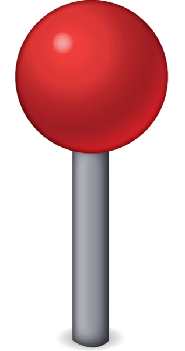

What is BlackBook?
BlackBook is a street art finder App that was developed by four University of Central Florida students during fall 2019. The app was developed through user centered design practices, methods, and techniques to ensure user experience is achieved in the software design process.
The Market
What Makes Us Different? Our App will be free of charge and users will have the option to create a peronsal account. We offer digital galleries with high quality images and physical location.
So How Will We Make Profit?App monetization will include advertising similar to how instagram make their profit.
Primary Users
The Design

Blackbook’s color scheme is simple with a few pops of color so that the murals featured on the app can stand out and speak for themselves. The color scheme is simple yet modern. The Orange yellow (#ffdb4d) is used for our icon. Orange and yellow are associated with joy, enthusiasm, and happiness.
Logo and Identity
We decided on using a
spray paint
cap as our logo because it is the embodiment of graffiti. Street art is commonly associated with spray
paint and bright colors so we chose a vibrant shade of orange for the background to contrast with the
typography chosen for the application name.
Mobile App Icon
The mobile application icon display has an orange (#ffbd4d) color background to match the colors used in our app design. The color orange is perfect for our street art app because it represents joy and creativity. The icon contains only the logo of our brand to keep it simple and modern.
Camera
 When designing the camera’s
interface, we wanted to make sure it was easy to use by making it familiar to users so that they aren’t
confused. We compared the interface to a simple camera on an iPhone or the Instagram app. The camera is
used to take pictures of murals that users find and post it onto the app. Other users are then able to
view the art, share it, favorite it, comment on it, etc.
When designing the camera’s
interface, we wanted to make sure it was easy to use by making it familiar to users so that they aren’t
confused. We compared the interface to a simple camera on an iPhone or the Instagram app. The camera is
used to take pictures of murals that users find and post it onto the app. Other users are then able to
view the art, share it, favorite it, comment on it, etc.
Maps
Default Map
 The map is a standard theme that shows roads,
landmarks and labels. We choose this style because it is already familiar to users. Users can pinch in and out using their fingers.
The map is a standard theme that shows roads,
landmarks and labels. We choose this style because it is already familiar to users. Users can pinch in and out using their fingers.
Pin Drop Location: When a user is selecting a specific area, the light blue circle will represent a radius selected by the user.
 The BLACK pin represents the center
of the radius
The BLACK pin represents the center
of the radius
 The RED pin marks all the street art and/or events found within the radius.
Notifications
Nearby Places: When a user comes near a location of interest, whether it be artwork or an event, a notification will be displayed on the user’s device to let them know of it. Pressing the notification will bring the user directly to the map and drop a pin for them.

Recommendations: Notifications may also make periodic recommendations to artwork and events in general, based on the user’s interests, though any of the aforementioned features can be turned off at their discretion.
Low Fidelity Paper Prototype
Mid-range Fidelity Prototype
High Fidelity Prototype
User Evaluation
-
Feedback
- User thinks that the colors can be distracting
- Add a terms and condition tab on the settings page Lessons and Solutions
- Create a different and more functional upload button
- Each image on favorites and posts page should be clickable
- Less gradient style color and more earthy tones (gray format) on the navigation screen